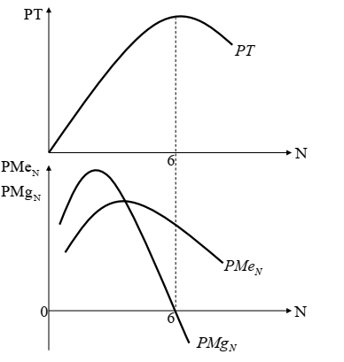
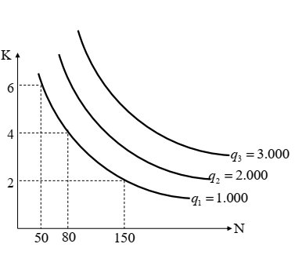
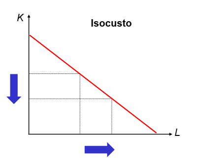
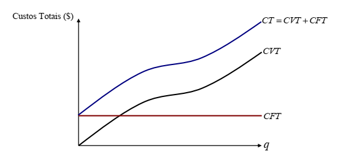
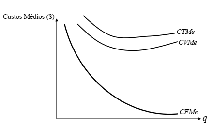
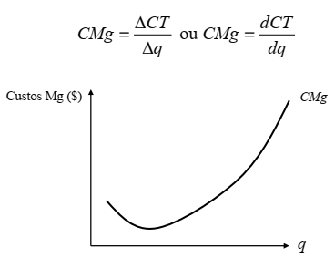
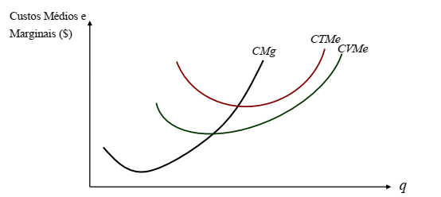
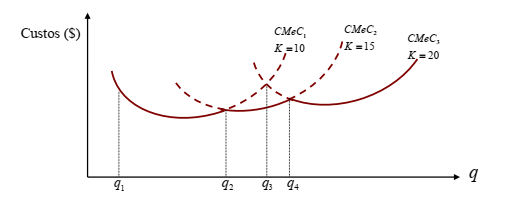
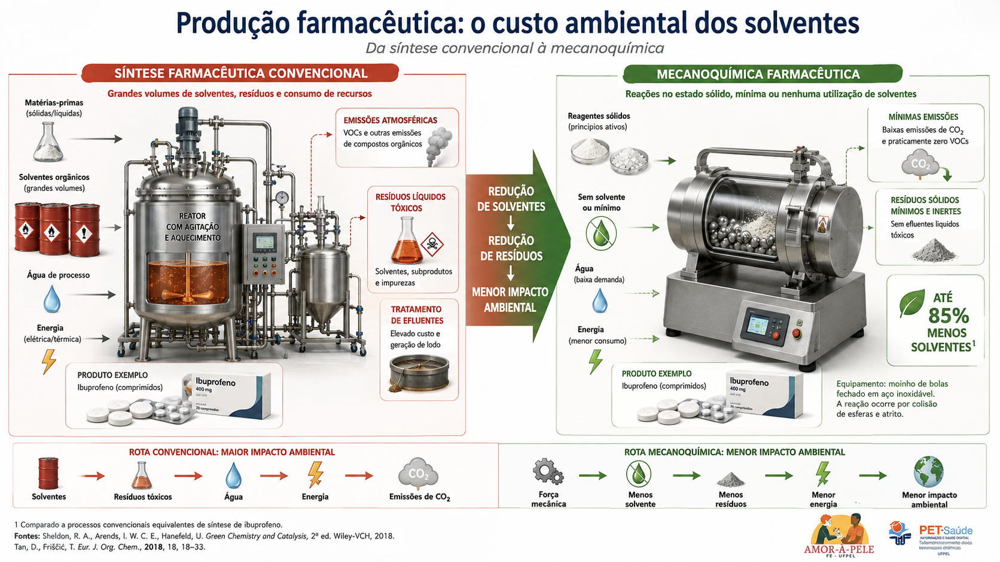
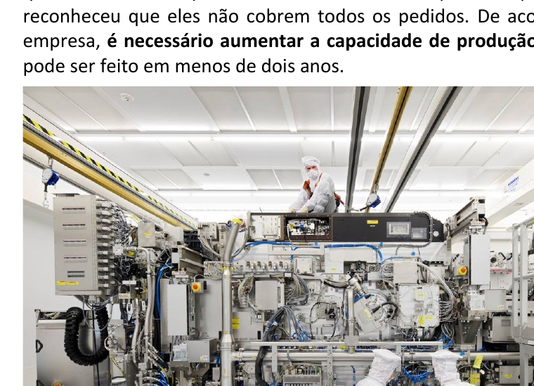

Como a firma transforma insumos em produto
A teoria da produção estuda a relação entre insumos e quantidade produzida. Já a teoria dos custos adiciona os preços dos insumos e mostra quanto custa produzir em diferentes escalas. Em sala, isso se organiza em uma sequência lógica: produção, produtividade, rendimentos, custos e planejamento.
trabalho, capital, terra e matérias-primas
transformação técnica
bens e serviços finais
Ponto-chave: função de produção não é função de oferta. A função de produção relaciona quantidades físicas de fatores e produto; a função de oferta relaciona produção e preços.
Produção, eficiência e função de produção
O que é produção?
É o processo pelo qual a firma transforma fatores de produção adquiridos em produtos ou serviços para venda no mercado.
Mão de obraCapital físicoTerraMatérias-primas
Dois tipos de eficiência
Eficiência técnica: produzir a mesma quantidade usando menos insumos.
Eficiência econômica: produzir a mesma quantidade com menor custo.
Função de produção
N: trabalho; K: capital físico; M: matérias-primas; T: terra/área, conforme a notação da aula.
Curto prazo (CP)
Período em que existe pelo menos um fator fixo. Ex.: instalações ou máquinas da empresa.
Longo prazo (LP)
Período em que todos os fatores são variáveis. É o horizonte do planejamento e da mudança de escala.
Produto total e produtividades
No curto prazo, costuma-se analisar a produção com um fator variável e um fator fixo. A aula trabalha com três medidas principais: produto total, produtividade média e produtividade marginal.
Produto total (PT)
Quantidade total produzida em determinado período.
Produtividade média (PMe)
Relação entre o nível do produto e a quantidade usada do fator de produção.
Produtividade marginal (PMg)
Variação do produto gerada pelo acréscimo de uma unidade do fator variável.

Lei dos rendimentos decrescentes
Ao aumentar o fator variável, mantendo fixo ao menos um fator, a produtividade marginal cresce até certo ponto e depois passa a cair, podendo inclusive tornar-se negativa.
Essa lei vale no curto prazo, justamente porque pressupõe a existência de fator fixo.
Isoquantas, isocustos e rendimentos de escala
No longo prazo, a firma pode variar simultaneamente trabalho, capital e outros fatores. Por isso, o foco deixa de ser “quanto produzir com uma planta dada” e passa a ser “qual combinação de fatores e qual escala escolher”.


Escolha ótima no longo prazo
A firma escolhe a combinação de fatores considerando custos de produção e demanda pelo produto. Em termos gráficos, a escolha eficiente aparece na tangência entre isoquanta e isocusto.
Rendimentos crescentes de escala
Todos os fatores aumentam numa proporção e a produção cresce mais do que proporcionalmente.
Rendimentos constantes de escala
Todos os fatores e a produção crescem na mesma proporção.
Rendimentos decrescentes de escala
Todos os fatores aumentam numa proporção e a produção cresce menos do que proporcionalmente.
Do custo privado ao planejamento de longo prazo
Avaliação privada × avaliação social
Avaliação privada: análise financeira da empresa.
Avaliação social e ambiental: considera custos e benefícios para toda a sociedade.
Externalidades: efeitos da produção sobre terceiros, positivos ou negativos.
ESG
O material destaca a lógica Environmental, Social and Governance, conectando a firma a responsabilidade ambiental, social e de governança.
Custos a curto prazo
CFT: custo fixo total.
CVT: custo variável total.
CT: custo total = CFT + CVT.
Custos médios
CFMe, CVMe e CTMe, com a relação:




Relação importante
Se o custo marginal estiver acima do custo médio, o custo médio está subindo. Se estiver abaixo, o custo médio está caindo. Quando forem iguais, o CMg corta o custo médio no seu ponto mínimo.
Longo prazo
No longo prazo, não existem custos fixos; todos os custos são variáveis. O empresário opera no curto prazo, mas planeja no longo prazo.

Dois casos práticos: ibuprofeno e microchips
Os anexos acrescentam dois exemplos excelentes para ligar teoria e prática: a fabricação de ibuprofeno e a indústria de microchips. Eles aparecem aqui como pontes para pensar produção, custos, externalidades, tecnologia e escala.
Ibuprofeno: produção farmacêutica e solventes
O texto destaca o peso ambiental dos solventes na indústria farmacêutica: geração de resíduos, uso intensivo de insumos e necessidade de controle regulatório.
Didaticamente, isso ajuda a discutir:
- avaliação privada × social;
- externalidades negativas;
- mudança tecnológica para processos mais limpos;
- eficiência econômica, não apenas técnica.

Microchips: gargalos produtivos e escala
O texto sobre semicondutores mostra como a produção depende de cadeias altamente especializadas, equipamentos raros e investimentos gigantescos.
Didaticamente, ele ajuda a discutir:
- fatores fixos e limitações de curto prazo;
- planejamento de longo prazo;
- economias de escala;
- gargalos tecnológicos e restrições de capacidade.

Leitura econômica: nos dois casos, produzir não é só combinar insumos. É lidar com tecnologia, restrições físicas, ambiente regulatório, cadeias de suprimento e custos sociais. A velha firma do quadro-negro continua viva; só ganhou mais parafusos, mais moléculas e um belo punhado de chips.
O que o estudante deve lembrar
20 questões de revisão
A maior parte das questões deriva diretamente da aula; as últimas integram os exemplos práticos de ibuprofeno e microchips.